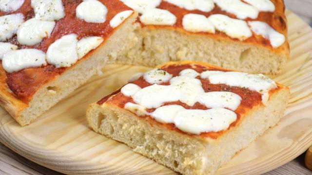

Pizza Recipe

Description
This recipe is about a 100% Italian homemade pizza, very few ingredients are needed to taste this fantastic dish
A lot people make pizza everyday but I suffer everytime I see pizza with weird ingredients on it, this web-page recipe will help you to cook some very delicious pizza
Ingredients
- Flour (500g)
- Yeast (7g)
- Sugar (10g)
- Warm water (400mL)
- Olive Oil (50mL)
- Salt (6.5g)
- Tomato Sauce (300g)
- Mozzarella (250g)
- A bowl
- Baking tray (35 x 35 cm)
Steps
- In a bowl, add flour (not all the flour), 7g of yeast and 2 little spoons of sugar, mix it all together
- Pour the warm water and add the olive oil, keep on mixing it and add some flour while mixing it
- Add a little spoon of salt and keep on mixing it, at the end of that the dough should look very dense and sticky, let it bump up for 2 hours
- Take the baking tray and spread some olive oil on it, pour the dough on it and spread it too on the baking tray
- Pour the tomato sauce (possibly warm) on the dough, put it in the oven for 25 minutes at 210 C
- Take the pizza from the oven and add the mozzarella
- Now you can taste your delicious italian pizza!